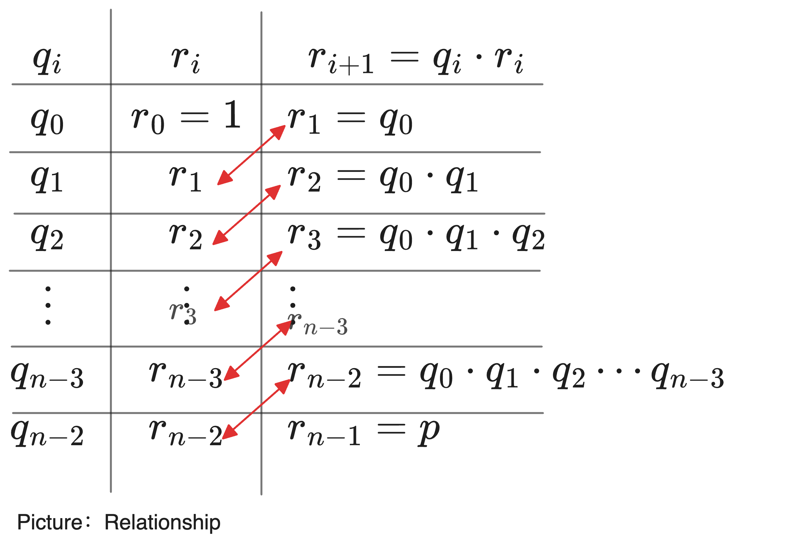
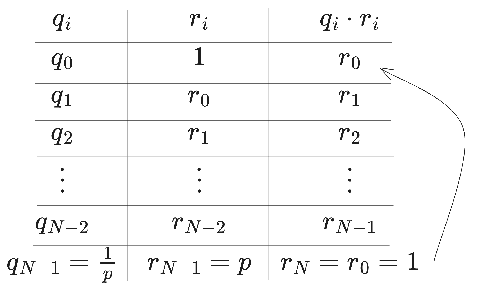

Plonkish circuit encoding uses two matrices, $(Q, \sigma)$, to describe the circuit’s scaffold, where $Q$ represents the operation selectors and $\sigma$ represents permutation constraints. These constraints enforce that certain positions in the $W$ matrix must hold identical values. This article focuses on explaining the principles of the permutation argument.
Reviewing Copy Constraints
The permutation $\sigma$ represents the relationship between positions before and after rearrangement. But what does $\sigma$ actually look like?
Let’s consider an example: suppose we have two evaluation vectors of polynomials, $\vec{a}$ and $\vec{a}’$, where the elements of $\vec{a}’$ are obtained by permuting the corresponding positions of $\vec{a}$.
For instance, let $\vec{a} = [a_1, a_2, a_3]$ and $\vec{a}’ = [a_3, a_1, a_2]$, along with a permutation $\sigma = (1 \to 2, 2 \to 3, 3 \to 1)$. Here, $\sigma$ represents a reordering of elements:
- $\sigma(1) = 2$, meaning $\vec{a}(1) = \vec{a’}(2)$;
- $\sigma(2) = 3$, meaning $\vec{a}(2) = \vec{a’}(3)$;
- $\sigma(3) = 1$, meaning $\vec{a}(3) = \vec{a’}(1)$.
Let’s revisit the Plonkish $W$ table, which has three columns, and the rows are aligned to $2^2$.
Note: In Plonkish protocols, “rows aligned to $2^2$” means that the total number of rows in the table is a multiple of $2^2 = 4$. That is, the table rows are padded or constructed to be a multiple of 4, which simplifies the subsequent computation and proof processes. Below is an example table:
$$ \begin{array}{c|c|c|c|} i & w_{a,i} & w_{b,i} & w_{c,i} \ \hline 1 & {\color{red}x_5} & {\color{blue}x_6} & {\color{green}out} \ 2 & x_1 & x_2 & {\color{red}x_5} \ 3 & x_3 & x_4 & {\color{blue}x_6} \ 4 & 0 & 0 & {\color{green}out} \ \end{array} $$
We aim to constrain the Prover while filling out the $W$ table, ensuring the following copy constraints are satisfied: $w_{a,1} = w_{c,2}$, $w_{b,1} = w_{c,3}$, and $w_{c,1} = w_{c,4}$. In other words:
- The value in $w_{a,1}$ must be copied to $w_{c,2}$;
- The value in $w_{b,1}$ must be copied to $w_{c,3}$;
- The value in $w_{c,1}$ must be copied to $w_{c,4}$.
The challenge here lies in the fact that the Verifier cannot directly view the $W$ table. Besides, the proof of multiple copy constraints in the $W$ table must be achieved through a single random challenge.
In Plonk, the “copy constraints” are implemented using the permutation argument, which essentially rearranges the values in the table that need to be equal and then proves that the rearranged table is equivalent to the original table. This is why we introduce $\sigma$ to represent the permutation relationship.
With $\sigma$, the problem can be reduced to proving:
- Two equal-length vectors, $\vec{a}$ and $\vec{a}’$, satisfy a known permutation $\sigma$;
- $\vec{a} = \vec{a}’$, i.e.,
$$ a_i = a’_{\sigma(i)} $$
Another Example: Cyclic Permutation
Suppose $\vec{a} = (a_0, a_1, a_2, a_3)$ and $\vec{a}’ = (a_1, a_2, a_3, a_0)$, where the two vectors follow a “left cyclic permutation”. Then $\sigma = {0 \to 1, 1 \to 2, 2 \to 3, 3 \to 0}$. If we can prove $\vec{a} = \vec{a}’$, then the values at corresponding positions of the two vectors must be equal:
$$ \begin{array}{c{|}c|c|c|c|c} \vec{a} & a_0 & a_1 & a_2 & a_3 \ \hline \vec{a}’ & a_1 & a_2 & a_3 & a_0 \ \end{array} $$
Thus, $a_0 = a_1$, $a_1 = a_2$, $a_2 = a_3$, and $a_3 = a_0$. This leads to the conclusion that $a_0 = a_1 = a_2 = a_3$, i.e., all elements in $\vec{a}$ are equal.
In summary, for the $W$ table, we only need to rearrange the positions that need to be equal, then let the Prover prove that the $W$ table and its rearranged version $W’$ are equivalent. To prove these two tables are equal, we can encode them into polynomials and then use a probabilistic check. The remaining task is to ensure that the Prover proves $W’$ is honestly rearranged according to the pre-agreed permutation.
Next, let’s explore how the Prover can prove that two vectors satisfy a specific permutation relationship. The permutation argument is the core of the Plonk protocol. To explain its mechanism, we start with a foundational protocol — the Grand Product Argument.
A Cold Start: Grand Product
Suppose we want to prove the following “grand product” relationship:
$$ p = q_0 \cdot q_1 \cdot q_2 \cdot \cdots \cdot q_{n-2}. $$
To handle the grand product, the basic idea is to let the Prover construct proofs for a series of single-product computations and then encode these into polynomials for probabilistic verification by the Verifier.
Key Insight: The critical idea is to convert a grand product computation into multiple single-product computations.
Analogy: Think of this process like building a tower of blocks:
- The “grand product computation” is like stacking all the blocks at once to form a tall tower.
- The “single-product computations” are like stacking one block at a time, gradually building the same tower.
For example, consider computing $a \cdot b \cdot c \cdot d$:
- Compute $a \cdot b = e$;
- Multiply the result $e$ by $c$ to get $e \cdot c = f$;
- Multiply the result $f$ by $d$ to get the final result $f \cdot d$.
In this way, the grand product computation is completed through three separate multiplication steps, each adding a “block” to the existing tower.
To break a grand product into multiple single-product computations, we introduce an auxiliary vector (denoted as $\vec{r}$). This vector records the intermediate results after each multiplication step:
$$ \begin{array}{c|c|l} q_i & r_i & \ \ r_{i+1} = q_i \cdot r_i \ \hline q_0 & r_0 = 1 & r_1 = q_0 \ q_1 & r_1 & r_2 = q_0 \cdot q_1 \ q_2 & r_2 & r_3 = q_0 \cdot q_1 \cdot q_2 \ \vdots & \vdots & \vdots \ q_{n-3} & r_{n-3} & r_{n-2} = q_0 \cdot q_1 \cdot q_2 \cdots q_{n-3} \ q_{n-2} & r_{n-2} & r_{n-1} = p \ \end{array} $$
The table above represents the computation trace of the grand product. Each row corresponds to a single-product computation, starting from the top and ending with the final result $p$. The vector $(q_0, \cdots, q_{n-2})$ essentially serves as a sequence of intermediate steps.
- The leftmost column contains the vector ${q_i}$ for the grand product.
- The middle column ${r_i}$ is the auxiliary vector that records intermediate values.
- The rightmost column represents the intermediate results after each multiplication.
It’s easy to see that the middle column $\vec{r}$, shifted up by one row, matches the rightmost column $\vec{q_i \cdot r_i}$ almost exactly, except for the last element $r_{n-1} = p$. The first element of $\vec{r}$ is initialized to 1, while its last element records the final result.

The vector $\vec{r}$ serves as an accumulator, recording each intermediate result in the grand product computation:
$$ r_k = \prod_{i=0}^{k-1} q_i $$
Next, we encode $\vec{q}$ and $\vec{r}$ as polynomials over the multiplicative subgroup $H$:
$$ \begin{array}{c|c|c} H & q_i & r_i \ \hline \omega^0 & q_0 & r_0 = 1 \ \omega^1 & q_1 & r_1 \ \omega^2 & q_2 & r_2 \ \vdots & \vdots & \vdots \ \omega^{N-2} & q_{N-2} & r_{N-2} \ \omega^{N-1} & q_{N-1} = 0 & r_{N-1} = p \ \end{array} $$
Polynomials $q(X)$ and $r(X)$ are used to encode $\vec{q}$ and $\vec{r}$, respectively.
We can derive the following recurrence relation:
$$ r_0 = 1, \qquad r_{k+1} = q_k \cdot r_k $$
Thus, the three columns of the table, when encoded into polynomials, must satisfy the following three constraints:
- First Constraint is
$$ L_0(X) \cdot (r(X) - 1) = 0, \qquad \forall X \in H $$
This constraint is constructed using Lagrange interpolation to ensure that the initial value of $r(X)$ is $1$.
- Second Constraint is the recursive multiplication relationship:
$$ q(X) \cdot r(X) = r(\omega \cdot X), \qquad \forall X \in H \setminus {\omega^{-1}} $$
Notes:
- The purpose of this constraint is to verify the recursive relationship by calculating $q(X) \cdot r(X)$ and $r(\omega \cdot X)$ and ensuring the results are equal.
- The term $\omega \cdot X$ represents a scaling or shift of $X$. Here, $\omega$ is a fixed value known as a primitive root of unity, used to shift within the cyclic group; $X$ is the current point. Multiplying by $\omega$ moves $X$ to a new point in the group.
- Why multiply $X$ by $\omega$? The primary reason is that it ensures each shift (or scaling) is proportional, maintaining uniform spacing between points in the cyclic group. For instance, $\omega = e^{\frac{2\pi i}{n}}$ (an $n$ th root of unity) corresponds to a fixed rotation angle on the complex plane. Multiplying $X$ by $\omega$ rotates points by a fixed angle, ensuring even distribution in the cycle.
- Why exclude $X = \omega^{-1}$? This exclusion avoids potential issues:
- At $X = \omega^{-1}$, calculations may involve singularities or undefined behavior (e.g., division by zero).
- In Fast Fourier Transforms (FFT) or Discrete Fourier Transforms (DFT), this can cause overlapping or confusion between frequency points.
- In polynomial interpolation, this may lead to repeated roots or reduced interpolation precision.
- Numerical instability or rounding errors may accumulate.
- In this context, $q_{N-1} = 0$ serves as a special condition to enforce $r_{N-1} = p$. This ensures that the grand product result $p$ is properly encoded as part of $r(X)$.
- Third Constraint is to ensure that $r(X)$ evaluates to $p$ at the endpoint:
$$ L_{N-1}(X) \cdot (r(X) - p) = 0, \qquad \forall X \in H $$
How to address the Exclusion of $X = \omega^{-1}$?
The second constraint does not cover the entire set $H$ (it excludes $\omega^{-1}$). To address this, we can rewrite it as the following constraint equation, ensuring the polynomial constraint now fully covers $H$:
$$ \big(q(X) \cdot r(X) - r(\omega \cdot X) \big) \cdot \big(X - \omega^{-1} \big) = 0, \qquad \forall X \in H. $$
Simplifying and Combining Constraints
We can use a small trick to simplify and combine the three constraints into a single polynomial constraint.
By adding an additional row to the grand product computation table and setting $q_{N-1} = \frac{1}{p}$ (where $p$ is the grand product of the vector $\vec{q}$):
$$ \begin{array}{c|c|c} q_i & r_i & q_i \cdot r_i \ \hline q_0 & 1 & r_0 \ q_1 & r_0 & r_1 \ q_2 & r_1 & r_2 \ \vdots & \vdots & \vdots \ q_{N-2} & r_{N-2} & r_{N-1} \ q_{N-1} = \frac{1}{p} & r_{N-1} = p & r_{N} = r_0 = 1 \ \end{array} $$
This ensures $r_N = r_0 = 1$. The rightmost column now represents a cyclic shift of $\vec{r}$. Additionally, every row in the table satisfies the multiplicative relationship!

Recursive Grand Product Representation
Using this setup, the recursive grand product can now be expressed as:
$$ q(X) \cdot r(X) = r(\omega \cdot X), \qquad \forall X \in H $$
Note:
Using the above trick, we modified the original constraint: $q(X)\cdot r(X) = r(\omega\cdot X), \qquad \forall X\in H\backslash\{\omega^{-1}\} \qquad \to \qquad q(X)\cdot r(X)=r(\omega\cdot X), \qquad \forall X\in H$
This means that the point $\omega^{-1}$, which was previously excluded, now satisfies the constraint over the entire $H$.
Final Constraints
After applying these simplifications, the final polynomial constraints are:
$$ L_{N-1}(X)\cdot(r(X)-p)=0, \qquad \forall X\in H $$
$$ q(X)\cdot r(X) = r(\omega\cdot X), \qquad \forall X\in H\backslash\{\omega^{-1}\} $$
$$ q(X)\cdot r(X)=r(\omega\cdot X), \qquad \forall X\in H $$
Verifier’s Challenge
Now, verifier can challenge the Prover with the following aggregated polynomial equation:
$$ L_0(X) \cdot (r(X) - 1) + \alpha \cdot (q(X) \cdot r(X) - r(\omega \cdot X)) = h(X) \cdot z_H(X) $$
where:
- $\alpha$ is a random challenge used to combine multiple polynomial constraints.
- $h(X)$ is the quotient polynomial.
- $z_H(X)$ is the vanishing polynomial defined as: $z_H(X) = (X - 1)(X - \omega)\cdots(X - \omega^{n-1})$
Verifying with the Schwartz-Zippel Lemma
Using the Schwartz-Zippel Lemma, the Verifier can provide a random challenge $\zeta$ to check whether the polynomial equation holds.
Steps:
- Construct the difference polynomial:
$$ A(X) = L_0(X) \cdot (r(X) - 1) + \alpha \cdot (q(X) \cdot r(X) - r(\omega \cdot X)) $$
$$ B(X) = h(X) \cdot z_H(X) $$
-
Define $R(X) = A(X) - B(X)$, where $d$ is the degree of $R(X)$.
-
Use the Schwartz-Zippel Lemma to verify:
- Select a random point $\zeta$ from $H$.
- Compute $R(\zeta)$:
- If $R(\zeta) = 0$, then $A(X) = B(X)$, and the equation holds.
- If $R(\zeta) \neq 0$, the equation does not hold, and the proof is invalid.
Notes:
The equation $q_L \circ w_a + q_R \circ w_b + q_M \circ (w_a \cdot w_b) - q_C + q_O \cdot w_c = 0$ is typically used to establish constraint relations, often referred to as a constraint polynomial, which is designed to express specific arithmetic circuit constraints.
On the other hand, the equation $L_0(X) \cdot (r(X) - 1) + \alpha \cdot (q(X) \cdot r(X) - r(\omega \cdot X)) = h(X) \cdot z_H(X)$ commonly appears in the construction of polynomial equations to verify certain algebraic properties. For instance, it is used in polynomial commitment schemes to prove the integrity and correctness of the entire circuit or protocol.
After understanding how to prove a grand product, the next step is to use the Grand Product Argument to implement the Multiset Equality Argument. This will allow us to verify that two multisets are equivalent in terms of their elements and multiplicities.
From Grand Product to Multiset Equality
Suppose we have two vectors, where $\vec{B}$ is a permutation of $\vec{A}$:
$$ \vec{A} = [1, 2, 3], \qquad \vec{B} = [3, 1, 2] $$
How do we prove that they are equivalent in the sense of a multiset (i.e., unordered sets)?
Firstly, we cannot simply prove that the polynomials encoded by the two vectors are equal to determine Multiset Equality. Here are the reasons:
- If the elements in the vectors are in a different order, the resulting polynomials will also differ.
For example, consider:
$$ \vec{A} = [1, 2, 3], \quad \vec{B} = [3, 1, 2] $$
Converting the vectors to polynomials by treating the elements as coefficients gives:
$$ \begin{aligned} A(X) &= 1 + 2X + 3X^2 \ B(X) &= 3 + 1X + 2X^2 \end{aligned} $$
Clearly, $A(X) \neq B(X)$ because the coefficients of the polynomials differ.
- Even if the polynomials differ, they could represent the same multiset.
For example, $A(X) \neq B(X)$, i.e., $1 + 2X + 3X^2 \neq 3 + X + 2X^2$. However, both polynomials represent the same multiset ${1, 2, 3}$.
This demonstrates Multiset Equality, even though the polynomials themselves are not equal.
Note: Encoding vectors as polynomials is a mathematical technique to represent information about the elements and their positions. You don’t need to dive too deeply into this—it’s enough to understand that simply comparing polynomials is insufficient for proving Multiset Equality.
How to Prove Multiset Equality
To prove Multiset Equality (unordered and with duplicates allowed), we essentially need to show that both vectors contain the same elements with the same multiplicities.
The most straightforward approach is to iterate over each element in one vector and verify that it exists in the other vector. However, this method has limitations:
- It fails if the vectors contain duplicate elements.
For example, ${1, 1, 2}$ is a multiset that is not equal to ${1, 2, 2}$ or ${2, 1}$.
A Direct Multiset Method Using Products
One another simple solution is to compute the product of all elements in both vectors, then check if the two products are equal. However, this approach has a major limitation:
- Vector elements must be prime numbers.
For example, $3 \times 6 = 9 \times 2$, but ${3, 6} \neq {9, 2}$.
A Better Approach: Compare the Root Sets of Polynomials
Instead of relying on the product of elements, we compare the root sets of polynomials derived from the vectors.
Step 1: Define the Root Set of a Polynomial
Let ${q_i}$ be the root set of a polynomial $q(X)$. For any element $q_i$ in the vector, $q(q_i) = 0$. The polynomial $q(X)$ is defined as:
$$ q(X) = (X - q_0)(X - q_1)(X - q_2) \cdots (X - q_{n-1}). $$
Step 2: Compare Root Sets
If there exists another polynomial $p(X)$ such that $p(X) = q(X)$, then the root sets ${q_i}$ and ${p_i}$ must be identical. For example:
$$ \prod_{i}(X - q_i) = q(X) = p(X) = \prod_{i}(X - p_i). $$
Step 3: Multiset Equality
If $p(X) = q(X)$, the two vectors satisfy Multiset Equality:
$$ {q_i} =_{\text{multiset}} {p_i}. $$
Why This Works
Let’s break down why this method proves Multiset Equality:
-
Step 1: Generate Polynomials
Each vector is represented as a polynomial, with its elements encoded as the roots of the polynomial. This step encodes the elements without considering their order. -
Step 2: Compute Root Sets
The root set of each polynomial is determined. This step captures the relationship between the elements of the vector and their multiplicities, while ignoring their order. -
Step 3: Compare Root Sets
If the root sets are identical, the vectors satisfy Multiset Equality.
Using the Schwartz-Zippel Lemma for Verification
To further verify Multiset Equality, we use the Schwartz-Zippel Lemma. Here’s the steps:
-
The Verifier sends the Prover a random number $\gamma$.
-
The Prover computes and sends back the following product for both vectors:
$$ \prod_{{i \in [n]}} (\gamma - p_i) = \prod_{{i \in [n]}} (\gamma - q_i). $$
Notes:
- $\prod$ denotes a product.
- $\gamma$ is a random constant or variable.
- $p_i$ and $q_i$ are elements of the two vectors.
- $i \in [n]$ means $i$ iterates from 1 to $n$.
Key Points
-
The equation $\prod_{i}(X - q_i) = q(X) = p(X) = \prod_{i}(X - p_i)$ ensures that the polynomials $p(X)$ and $q(X)$ are equivalent.
-
The equation $\prod_{{i \in [n]}} (\gamma - p_i) = \prod_{{i \in [n]}} (\gamma - q_i)$ ensures that the polynomials evaluate to the same value for the random challenge $\gamma$.
If this holds, it confirms that the two vectors are Multiset Equality.
Addressing Copy Constraints
At this stage, we have demonstrated that the root sets ${p_i}$ and ${q_i}$ are Multiset Equality. This provides a foundation for verifying copy constraints. Specifically, we can ensure that the zero sets (roots) of $W(X)$ and $W’(X)$ contain the same elements.
However, this alone is insufficient because it does not capture the exact correspondence between the roots, i.e., whether $p_i$ and $q_j$ align according to a predefined rule. To address this, we refer back to the Grand Product Argument to extend the proof and validate that the roots follow a specific permutation rule $\sigma$.
Notes: Two separate products can also be combined into a single product:
$$ \prod_{{i \in [n]}} (\gamma - p_i) = \prod_{{i \in [n]}} (\gamma - q_i) $$
can be rewritten as:
$$ \prod_{{i \in [n]}} \frac{(\gamma - p_i)}{(\gamma - q_i)} = 1 $$
Why This Works:
- The first equation states that the two products are equal. Each product is a polynomial evaluated at $\gamma$, with roots ${p_i}$ and ${q_i}$, respectively.
- By moving the right-hand side to the left and combining via division, we form a single grand product:
$$ \frac{\prod_{i \in [n]} (\gamma - p_i)}{\prod_{i \in [n]} (\gamma - q_i)} = 1. $$
- Using the properties of grand products, the combined equation simplifies to:
$$ \prod_{{i \in [n]}} \frac{(\gamma - p_i)}{(\gamma - q_i)} = 1 $$
This approach leverages the inherent properties of products to reduce the verification to a single product.
Now that we understand how to prove Multiset Equality, the next step is to construct the Permutation Argument. This will allow us to implement the Copy Constraints required by the Plonk protocol.
From Multiset Equality to Permutation Argument
In general, constructing a permutation argument requires more than just proving Multiset Equality, as it cannot capture the exact ordering of elements. A grand product or product check is necessary to verify the specific permutation relationship between elements.
Step 1: Multiset Equality
As discussed earlier, the first step is to verify Multiset Equality between the roots $p_i$ and $q_i$, ensuring:
$$ \prod_{{i \in [n]}} \frac{(\gamma - p_i)}{(\gamma - q_i)} = 1 $$
Note: The grand product method is a computational technique that can be applied multiple times.
Step 2: Verifying Permutation Consistency
Next, we need to verify whether $q_i = p(\sigma(i))$, i.e., whether the elements of $q_i$ are a permutation of $p_i$ under a specific mapping $\sigma$. This is typically done as follows:
-
Permutation Polynomial Encoding:
In PLONK, a special permutation polynomial $\sigma(X)$ is used to encode the permutation relationship, explicitly describing how $p_i$ maps to $q_i$. -
Consistency Check:
To verify the permutation consistency, the following relationship is checked: $p(X) = q(\sigma(X))$,where $p(X)$ and $q(X)$ are the polynomials interpolated from $p_i$ and $q_i$, and $\sigma(X)$ is the permutation polynomial.
-
Product Check:
To ensure the correctness of the permutation, a grand product check is used:
$$ \prod_{{i \in [n]}} (\gamma - p_i) = \prod_{{i \in [n]}} (\gamma - q_{\sigma(i)}) $$
The above product equation inherently captures both Multiset Equality and the specific permutation relationship.
However, in some cases, Multiset Equality can be considered a special case of Permutation Argument. This is because Multiset Equality verifies that two sets are related by some permutation, without identifying the exact permutation. In other words, Multiset Equality ensures that the two vectors ${p_i}$ and ${q_i}$ are related by an unknown permutation.
What we need, however, is a proof and verification of a known permutation relationship. This requires proving a specific, publicly defined reordering of an ordered vector, such as locally cyclic shifts within subsets.
Example: Odd-Even Permutation
Let’s consider an example where the Prover needs to prove that two vectors satisfy an odd-even swap permutation:
$$ \begin{aligned} \vec{a} &= (a_0, a_1, a_2, a_3, \ldots, a_{n-1}, a_n) \ \vec{b} &= (a_1, a_0, a_3, a_2, \ldots, a_n, a_{n-1}) \end{aligned} $$
We encode both vectors into polynomials $a(X)$ and $b(X)$, respectively. To describe the odd-even swap, we use a position vector $\vec{i}$ and a permutation function $\sigma$:
$$ \vec{i} = (0, 1, 2, 3, \ldots, n-1, n), \quad \sigma = (1, 0, 3, 2, \ldots, n, n-1). $$
- Each element $i$ in $\vec{i}$ represents the initial position of an element.
- The permutation $\sigma$ describes how the positions are rearranged.
We then align the position vector $\vec{i}$ with $\vec{a}$ and $\vec{b}$:
$$ \begin{array}{|c|c|c|c|} a_i & i & b_i & \sigma(i) \ \hline a_0 & 0 & b_0 = a_1 & 1 \ a_1 & 1 & b_1 = a_0 & 0 \ a_2 & 2 & b_2 = a_3 & 3 \ a_3 & 3 & b_3 = a_2 & 2 \ \vdots & \vdots & \vdots & \vdots \ a_{n-1} & n-1 & b_{n-1} = a_n & n \ a_n & n & b_n = a_{n-1} & n-1 \ \end{array} $$
Next, we fold the left two columns and the right two columns into paired elements. That is, represent $(a_i, i)$ as a single element and $(b_i, \sigma(i))$ as another. The resulting table looks like this:
$$ \begin{array}{|c|c|} a’_i=(a_i, i) & b’_i=({b}_i, \sigma(i)) \ \hline (a_0, 0) & (b_0=a_1, 1) \ (a_1, 1) & (b_1=a_0, 0) \ \vdots & \vdots \ (a_{n-1}, n-1) & (b_{n-1}=a_{n}, n) \ (a_n, n) & (b_n=a_{n-1}, n-1) \ \end{array} $$
If vectors $\vec{a}$ and $\vec{b}$ satisfy the permutation $\sigma$, then the merged vectors $\vec{a}’$ and $\vec{b}’$ will satisfy Multiset Equality.

Why Odd-Even Permutation Can Be Reduced to Multiset Equality is because Odd-even Permutation can leverage Multiset Equality, as their defining property—swapping odd and even positions—depends only on the content of the set, not the exact details of the permutation:
- If we only care about whether the permutation is an Odd-even Permutation, we focus on the consistency of the elements’ content (i.e., Multiset Equality).
- The odd-even nature describes a high-level property of the permutation without requiring verification of specific arrangements.
- Thus, verifying an odd-even permutation only requires proving Multiset Equality, without checking specific positional relationships.
Handling Pairs with Folding
One issue arises when the table’s left and right columns consist of pairs (e.g., $(a_i, i)$ and $(b_i, \sigma{(i)})$ ). Such pairs cannot directly serve as roots of a univariate polynomial.
To resolve this, we apply a folding technique: ask the Verifier for a random number $\beta$ and combine the pairs into single values:
$$ \begin{array}{|c|c|} a’_i=(a_i+\beta\cdot i) & b_i’=(b + \beta\cdot \sigma(i)) \ \hline (a_0 + \beta\cdot 0) & (b_0 + \beta\cdot 1) \ (a_1 + \beta\cdot 1) & (b_1 + \beta\cdot 0) \ \vdots & \vdots \ (a_{n-1} + \beta\cdot n-1) & (b_{n-1} + \beta\cdot n) \ (a_n + \beta\cdot n) & (b_n + \beta\cdot (n-1))\ \end{array} $$

This transforms the paired elements into single values, enabling polynomial encoding.
Note: In the third step of the diagram above, addition is used because it is the simplest operation. However, could other algorithms (such as multiplication, division, or more complex functions) be used instead? The answer is no, and the key reason is security. To ensure security, randomness must be introduced. If randomness is not included, the Prover could potentially construct a fraudulent proof that bypasses verification. By introducing a random challenge $\beta$ from the Verifier, the Prover is forced to encode the pair $(a_i, i)$ securely into a single value as: $\vec{a}’_ i = a_{i} + \beta \cdot {i}$.
After folding, the Prover can now prove that $\vec{a}’$ and $\vec{b}’$ satisfy Multiset Equality, thereby proving that the original vectors $\vec{a}$ and $\vec{b}$ follow the specific permutation relationship.
Complete Permutation Protocol
Let’s describe the entire permutation protocol step by step:
Assumptions
- Let $\mathbb{F}_p$ be a finite field containing a multiplicative subgroup $H = \{1, \omega, \omega^2, \ldots, \omega^{N-1}\}$, where $\omega$ is a generator of $H$.
Inputs
- Public Inputs:
The permutation relationship $\sigma$. - Secret Inputs:
Two vectors $\vec{a}$ and $\vec{b}$ of length $N$.
Preprocessing
Prover and Verifier construct polynomials $[id(X)]$ and $[\sigma(X)]$, where:
- $id(X)$ encodes the sequence $(0, 1, 2, \ldots, N-1)$.
- $\sigma(X)$ encodes the permutation ${\sigma(0), \sigma(1), \ldots, \sigma(N-1)}$.
Note:
[]presents commit, means the purpose of $[id(X)]$ and $[\sigma(X)]$ are to allow Prover and Verifier can verify without disclosing the complete polynomial.
Protocol Steps
-
Prover Constructs and sends Polynomials:
The Prover computes and sends $[a(X)]$ and $[b(X)]$, encoding $\vec{a}$ and $\vec{b}$. -
Verifier’s Challenges:
The Verifier sends random challenges $\beta \leftarrow \mathbb{F}_p$ and $\gamma \leftarrow \mathbb{F}_p$. -
Prover Computes Grand Product:
- The Prover constructs an auxiliary vector $\vec{z}$:
$z_0 = 1, \qquad z_{i+1} = \prod_{i=0}^{N-1} \frac{a_i + \beta \cdot i + \gamma}{b_i + \beta \cdot \sigma(i) + \gamma}$
and polynomial $z(X)$ satisfies:
$$ L_0(X)\cdot(z(X)-1)=0, \qquad \forall X\in H $$
$$ \frac{z(\omega\cdot X)}{z(X)} = \frac{a(X)+\beta\cdot id(X) + \gamma}{b(X)+\beta\cdot \sigma(X) + \gamma}, \qquad \forall X\in H $$
- Then, the Prover sends $[z(X)]$.
-
Verifier’s Final Challenge:
The Verifier sends another random challenge $\alpha \leftarrow \mathbb{F}_p$. -
Prover Constructs Final Polynomials:
The Prover constructs:- A combined constraint polynomial $f(X)$.
- A quotient polynomial $h(X)$, satisfying:
$f(X)= L_0(X)(z(X)-1) + \alpha\cdot \big(z(\omega\cdot X)(b(X)+\beta\cdot\sigma(X)+\gamma)-z(X)(a(X)+\beta\cdot id(X)+\gamma)\big)$
$h(X) = \frac{f(X)}{z_H(X)}$
The Prover sends $[h(X)]$.
-
Verifier Checks Consistency:
The Verifier queries evaluations of $[a(X)]$, $[b(X)]$, $[z(X)]$, $[h(X)]$, $[\sigma(X)]$, and $[id(X)]$ at specific points and checks the following equation:- Query the values of the three polynomials $[a(X)],[b(X)],[h(X)]$ at $X=\zeta$ to get $a(\zeta)$, $b(\zeta)$, $h(\zeta)$;
- Query the values of the two positions $X=\zeta and X=\omega\cdot\zeta$ at $[z(X)]$ to get $z(\zeta)$ and $z(\omega\cdot\zeta)$;
- Send the evaluation query $X=\zeta$ to the two polynomials $[\sigma(X)]$ and $[id(X)]$ to get $id(\zeta)$ and $\sigma(\zeta)$;
- Verifier calculates the value of Vanishing Polynomial $z_H(\zeta)$ at $X=\zeta$ by itself, and compares it with Lagrange Polynomial $L_0(X)$ at $X=\zeta$ takes the value $L_0(\zeta)$
-
Final verification: According to values of polynomials, verify the constraint below:
$L_0(\zeta)(z(\zeta)-1) + \alpha\cdot (z(\omega\cdot \zeta)(b(\zeta)+\beta\cdot\sigma(\zeta)+\gamma)-z(\zeta)(a(\zeta)+\beta\cdot id(\zeta)+\gamma)) \overset{?}{=} h(\zeta)z_H(\zeta)$
Note: this constraint we had already known initially.
Summary
The core of the Permutation Argument lies in Multiset Equality Argument, which is extended by incorporating Grand Product Argument to handle specific mappings and permutations. By introducing random challenges, the protocol ensures correctness and prevents malicious behavior. This forms the foundation for implementing copy constraints in the Plonk protocol.
References:
- [WIP] Copy constraint for arbitrary number of wires. https://hackmd.io/CfFCbA0TTJ6X08vHg0-9_g
- Alin Tomescu. Feist-Khovratovich technique for computing KZG proofs fast. https://alinush.github.io/2021/06/17/Feist-Khovratovich-technique-for-computing-KZG-proofs-fast.html#fn:FK20
- Ariel Gabizon. Multiset checks in PLONK and Plookup. https://hackmd.io/@arielg/ByFgSDA7D